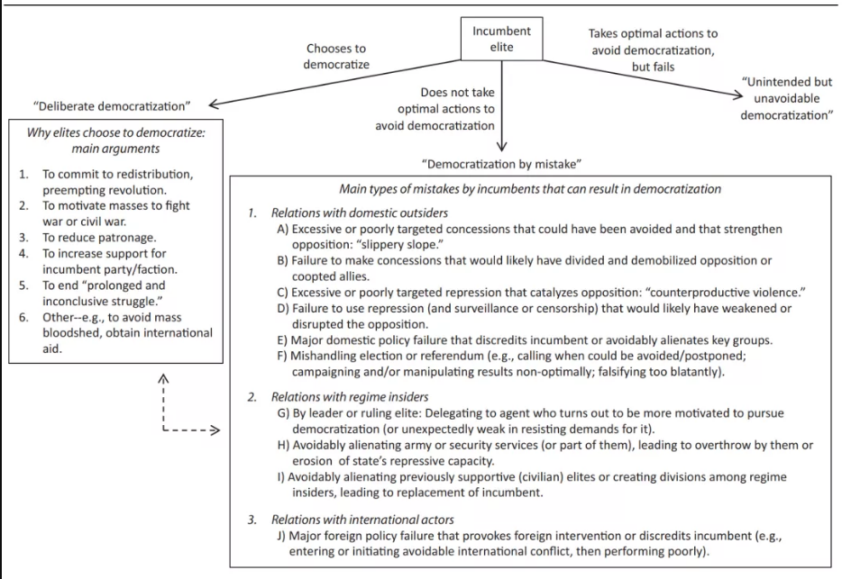
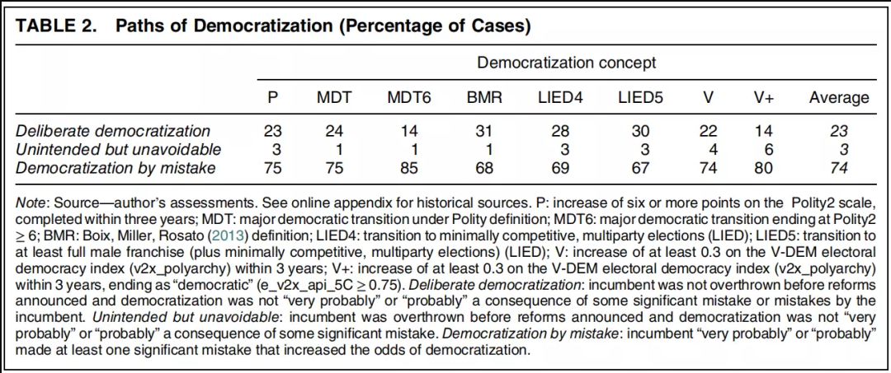
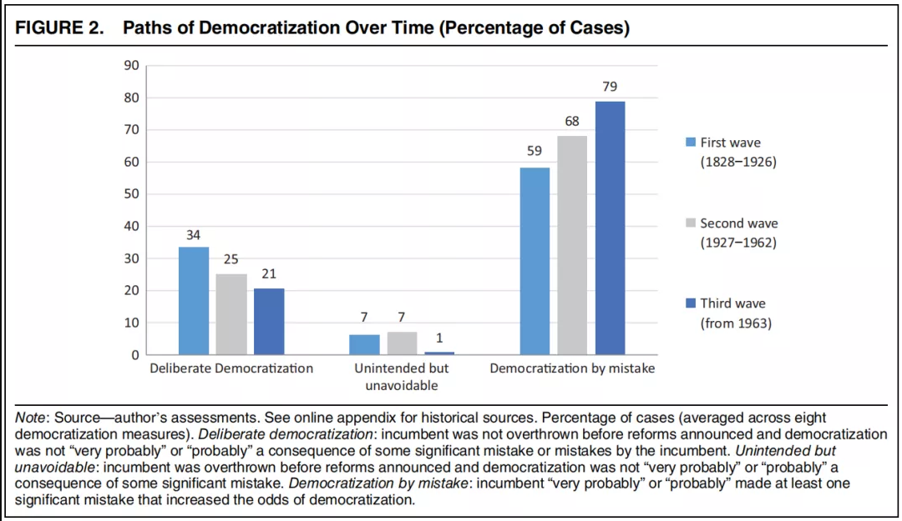
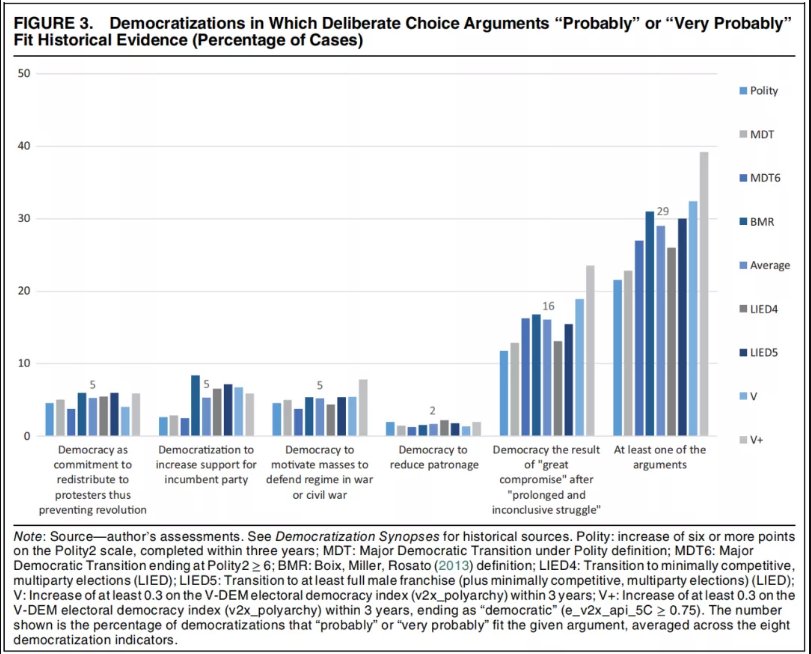

收录于合集
作品简介
作者： Daniel Treisman，加州大学洛杉矶分校政治学教授，美国国家经济研究局研究员，哈佛大学政治学博士；主要研究兴趣为俄罗斯政治与经济、比较政治经济。
来源： Treisman, D. (2020). Democracy by Mistake: How the Errors of Autocrats Trigger Transitions to Freer Government. American Political Science Review, 114(3), 792-810.
来源： ”政治学评介”（ID：zhengzhixuepingjie）
导 读
政治学评介： 权力和民主究竟是被新兴阶级从精英手中夺取过来的，还是专制当权者出于开明的私利自上而下授予的？本文从“能动者”视角切入，首先指出了类型学意义上大量经验现实与既有文献因果链条之间的脱节，反驳了盛行的“当权者主动选择产生民主”的观点。接下来着重探讨了专制当权者的各类失误如何使民主脱胎于威权主义统治。最后，本文举一反三，进一步提出了“民主领导人失误导致民主崩溃”、“能动者因素和结构因素在导致政权崩溃时孰轻孰重”等发散性议题以待学界进一步探讨。编译时对原文直译标题进行了改动。
**
**
摘 要
民主如何起源于威权主义统治？一些较有影响的理论认为，当权者有意地选择分享或交出权力，以此来防止革命、鼓舞公民作战、刺激政府提供公共物品、赢得与精英对手的竞争，或者限制派系间的政治暴力。通过考察自1800年来的民主化历史，本文发现该理论可能最多只能解释三分之一的民主化案例。超过三分之二的实例表明，民主化的发生不是出于当权者的主观选择，而是由于当权者在试图阻止民主化进程时犯了错误，并因此削弱了其对权力的控制。相对于被富有远见的精英所赋予或崛起的新兴阶级所强加，民主扩散往往是由当权者的失策触发了先前存在的潜伏因素而导致的。
01
引言
民主从专政中涌现出来，初闻是令人费解的。原因在于，从专政到民主的转型将以更广泛的权力分享取代了个人或一小撮群体的统治地位，当权者遭到了明确损失。鉴于最初的政治不平衡，他们本应能够避免这种损失，然而民主化还是发生了。
许多理论旨在解释其中的原因。这些理论认为，政治精英们拥抱民主，是因为其将民主视为承诺未来收入再分配的一种方式，或阻止革命的方式、抑或推动公民积极抵御外敌，或者通过民主来减弱未来政府的政治庇护现象。精英派系可能会实行自由化举措，来在政治竞争中赢得更多支持。民主也可能代表着僵化的社会群体之间的“巨大妥协”，并在协议中将这种“妥协”正式化。
这些说法的共同点是都假设当权者有意实行民主化。在普遍情形下，统治者认为这样做符合他们的利益：让出或分散权力是他们为防止革命发生、掌控军队、改善公共服务、边缘化竞争者及限制社会冲突而必须付出的代价。用亨廷顿的话来说，为了使民主涌现，“ 政治领导们必须有意地希望它发生或愿意采取措施……那样可能会导致民主的渐进实现。”正如罗斯托（Dankwart A. Rustow）所说，民主化需要“政治领导人的慎重决策”。虽然并非所有观点都同意这一假设，但当权者有意选择民主化的观点无疑是比较具有影响力的。
考察1800至2015年间所有民主化案例，会发现一些情况的确分别符合上述各类观点。例如，丹麦国王弗雷德里克七世（King Frederick VII of Denmark）非常有意地选择了改革，并于1848年接受了君主立宪制。
然而，大多数案例情况更加复杂。对于德比伯爵（Lord Derby）来说，迪斯雷利（Disraeli）1867年的公民选举法案似乎是“黑暗中的冒险”。这个短语已经被用来描述俾斯麦1871年的改革和佛朗哥在西班牙继承人的改革。意大利的乔利蒂1912年“在黑暗中冒险”，而波兰统治者则在第一次世界大战后“在黑暗中冒险”。历史学家指出，在叛军占领他的宫殿后，一位统治者（King Manuel II of Portugal）急忙“从偏僻的海滩乘船前往英格兰”。还有一位（Tunisia’s Ben Ali）在逃亡中没来得及带上药和眼镜；许多统治者最终入狱。1848年法国的菲利普一世，用托克维尔的话说，“就像一个人在夜间被地震惊醒……在他理解这一切之前就被震倒了。”在这些描述中，混乱、目光短浅和误判比理性决策显得更为突出。
本文推测民主的产生往往不是由于当权者们的有意推行，而是由于他们在试图阻止民主发生的过程中犯下了致命错误。为了探讨这一点，本文考察了316个历史事件中的每一个案例情况，这些案例都符合民主化的八项定义。我从各种来源编写了一份概要，记录了历史学家和分析家的关键事实和解释，并评估了每个有意选择民主的论点对于历史事件的解释作用，以及在这些案例中当权者是否犯下关键错误。根据证据的强弱，我从“非常可能”到“非常不可能”分为五个标准度量，基于自己对每个判断的信心进行了评分，并记录了每个判断背后的推理和证据。
根据民主化测度，历史证据显示“可能”或“非常可能”符合“有意主导”理论的案例中，1-2%的当权者有意推动政府削弱庇护，12-24%的当权者有意在陷入僵局的群体间寻求妥协。总体来说，22-39%的案例“可能”或“非常可能”符合以上“有意主导”理论其中之一或更多的观点。然而，当权者的过失似乎是更显著的原因。在67-85%的案例中，一个或多个当权者的失策“可能”或“非常可能”导致了民主化的结果。
尽管当权者失误的类型多种多样，然则大多与其狂妄自大相关。一些掌权者，如路易斯·菲利普（Louis Philippe I）低估了反对派的力量，未来得及妥协或镇压，一切已无力回天，革命之后的继任者随即进行了改革。另外一些当权者，如智利的奥古斯托·皮诺切特（Augusto Pinochet）则高估了自己的民意和声望，在未能完全充分掌控的情况下诉诸选举或公投而最终失败，进而分裂了政治精英并导致反对派实力增加。其余的，如阿根廷的莱奥波尔多·加尔铁里 （Leopoldo Galtieri），发动了军事冲突并期盼胜利，但由于同伙叛变以及对手动员，不论在军事上还是政治上都终获失败，另外还比如1985年后的米哈伊尔·戈尔巴乔夫，对旨在加强实际上破坏其政权的行为让步，最终溜下“滑坡（slippery slope）”。在所有这些情况下，统治者都想维持权力，却因重大失误破坏了现状。另一种情况是，由于统治阶层中的其他人判断错误而失败。比如佛朗哥政权后的西班牙统治集团选择了像胡安·卡洛斯（Juan Carlos）和阿道夫·苏亚雷斯（Adolfo Suárez）等人的领导。他们相信这些人会维护政权，但正是这些人最终实际摧毁了整个体系。
当然，并非所有当权者的失误都会导致民主化。失误一开始只会触发威权政权的失败；只有其他条件允许的情况下，民主才会出现。对于那些被赋予权力的人来说，民主也不是一个错误。虽然了解领导者犯错的原因很重要，但本研究的目的是探究民主化产生的情况，故只在最后部分提供对此问题的讨论。本文并非旨在提出普遍的因果论断，不过基于对历史证据的探索性研究，本文的确认为，在迄今为止的大多数民主化进程中，统治者并不打算放弃权力；但当他们未能选择最有可能避免民主化出现的做法时，民主就产生了。
在民主转型中涉及不确定性这一点并非新的研究发现。奥唐纳（O’Donnell）和施密特（Schmitter）强调了决策过程中的混乱。普沃斯基（Przeworski）认为民主化本身就是“一种……将不确定性制度化的行为”并展示了错觉如何引导自由主义者溜下 “滑坡”。本文证明了以上见解的持久有效性，并作出了进一步强调。虽然奥唐纳和普沃斯基都指出了当权者的短视与误判，但他们的主要重点是研究如何从理性谈判中产生民主转型。在主流叙事中，政府“软弱者”与“温和反对派”打交道，并一致对抗现任“强硬派”。
方法论上，本文应用了同余分析（congruence anaylysis）。这是一种“运用从抽象理论和这些理论相关强度的特定预测，从具体观察的（非）一致性中得出推论”的方法。另外，本文还试图为民主化研究的“历史转向”做出贡献。
下一部分回顾了“选择产生”和“无意所致”等对民主化过程的解释，并介绍了“失误的民主化（democratization by mistake）”的含义。随后是对分析方法及结果的讨论。最后一部分阐述了研究发现和研究结论。
02
概念框架
（一）选择产生的民主化
**
**
什么可能促使威权主义统治者放弃或分享权力？各种论点都假设当权者有意这样做。有人认为民主通常产生于贫富阶层之间的讨价还价，也有人将民主制度视为一种执行机制：穷人想通过民主没收富人财产。通常情况下，贫富之间无法达成协调，经济危机等冲击的出现会激起穷人的反抗，富人希望通过承诺分配未来的收入来收买反抗的穷人。然而，双方都知道富人可以食言。议会的建立和穷人选举权的赋予创造了这样的一种机制来执行这些承诺，以防止革命。
这种观点有几个明显的含义。民主化应基于要求经济再分配的反精英运动，例如抗议、罢工及其他群众行动。作为回应，当权者应该将穷人群体纳入政治过程，例如赋予他们投票权。因此改革应促进富人财富向穷人的再分配，以遣散穷人群体的反精英动员。而且民主本应该使这种承诺变得可信，即富人不应该在承诺不久之后取消再分配或重新实行专制。
阿西莫格鲁（Acemoglu）和罗宾森（Robinson）还提出了两种以中产阶级为特征的变体。如果威胁来自中产阶级，或者穷人需要中产阶级的领导，那么赋予中产阶级选举权就足够了，创造一种“部分民主”。或者，如果再分配给中产阶级也有利于穷人，那么让中产阶级选择政策可能会安抚穷人同时不疏远富人。
第二种观点涉及国家防卫。当国家遭到袭击时，富人需要公民拿起武器。通过授予穷人政治权利来激励穷人去战斗，然后富人就不用亲自上阵杀敌了。马克斯·韦伯写道，民主在欧洲取得了胜利，因为精英需要“非贵族群众的合作，因此将武器以及政治权力武装到了他们手中。”这种观点要求民主化发生在战争时期或重大威胁时期。精英们必须有意识地选择将权利扩展到那些需要战斗的人，或者后来需要遣散的人。
此外，还有一种观点将民主归因于统治圈内的分裂，而非穷人与富人之间的契约。利泽里（Lizzeri）和佩尔西柯（Persico）将民主化视为一种以增长为导向的派系斗争，激励官员通过提供公共产品而不是政治恩庇的方式来获取支持。由于公共物品是非竞争性的，运用公共物品获取支持这一方式在吸引选票方面的作用会随着选民人数的增加而增加。公民选举权的提升促使政客们用公共物品代替恩庇，证据可能包括由改革方声称的，民主化会减少恩庇或腐败的论点。或者，政治改革可能反映党派竞争。一个政党可能会授予新选民选举权，以提高其相对于竞争者的支持。在这种情况下，记录应该显示改革者有望从选举中受益。
第三种说法将民主视为一种促成和平的手段。根据罗斯托（Rustow）的观点，民主作为社会力量之间“长期且无结果的政治斗争”之后的“伟大妥协”而产生。这些社会力量可能是精英和群众、社会阶层或种族群体。在某些情况下，团体会订立明确的“协议”，规定解决冲突的规则。
在所有以上描述中，民主是由统治集团或其某个子集有意识的选择而产生的。但民主化通常是这样发生的吗？我们需要考虑另外的可能性。
（二）无意的民主化：既有的文献
另一种研究传统认为民主化不是当权精英的选择，而是当权精英被推翻后发生的事情。从马克思（Marx）到巴林顿·摩尔（Barrington Moore），这些思想家将议会统治描述为资产阶级革命的结果，这种资产阶级革命取代了或至少削弱了农耕贵族制。亨廷顿区分了：由精英发起的或精英与局外人达成的转型；和“替代”，即民主伴随着对转型前当权者的强制驱逐。这种替代确实发生在多达49%的民主化进程中。
本文研究了他们为什么这样做。阶级理论家将这种替代与经济发展和不断发展的社会结构联系起来。虽然阶级理论很重要，但很难解释转型的确切时间和模式。本文探讨了当权者的错误是如何造成的。尽管，结构性因素可能使革命更有可能发生，或者决定接下来会发生什么，但领导人的失误往往会点燃导火索。事实上，在当权者被推翻后的民主化进程中，数据表明反抗几乎总是由错误引发并且是对当权者的致命打击。
还有一些研究，虽然将民主化描述为一种深思熟虑的有意选择，但强调民主化发生的混乱环境。奥唐纳（O’Donnell）和施密特（Schmitter）指出了“在信息非常不足的情况下匆忙做出的关键决定的意外和不可预测性因素”的重要影响。在我的论述中也确实证实了这一点。不过，在他们的描述中，傲慢无知和不确定性是民主化的主要障碍，而非民主化的催化剂。政权改革者必须克服这些问题才能与局外温和派团结起来。战胜变幻莫测的命运（fortuna）需要“特定个人的威力（virtù）”（译者注：virtù本译为“美德”，此处参照《君主论》virtù含义，指统治者的力量和权威）。在我的论证中，命运不是障碍，而是故事的主角：当命运压倒威权维持者的威力时，改革就会发生。
近期，维兰德（Weyland）展示了有限理性、认知启发和损失厌恶如何解释各种政治决策。例如，1848年路易·菲利普在法国被推翻，导致其他地方生活在不同的环境中的民众也同样期待着类似的结果，他们走上街头，但却被压垮了。维兰德展示了1848年和阿拉伯之春期间公民的错误行动如何导致民主化尝试失败。而本文则展示了领导者的错误如何带来民主化的成功。
与本文论点最接近的是普沃斯基（Przeworski），他描述了两条基于“错误假设”的民主化之路。在这两种情况下，当权者都引入了部分改革，然后就失控了。首先，当权强硬派误读了他们的当权改革派盟友，认为他们赞同维持政权，而实际上改革派盟友更偏向完全民主化。其次，（改革派）当权者高估了他们通过威胁镇压的方式以终止革命的能力。
我以这些不同的文献为基础，提出了一种根植于威权治理理论的类型学。本文记载了10种跨越环境和时代的错误，并展示了政治平衡是如何随着时间变化的。结果表明，在大多数情况下，统治者的失误导致政权更迭的机制至关重要，并远远超出了“当权者有意选择”理论所能解释的范围。
（三）失误的民主化
但首先，什么是失误？失误是选择行动或不行动，使其预期收益低于另一个可行性的过程。简而言之，失误是非最优选择。
失误主要有两种形式：当行为体因为他们的信念不正确或不精确而选择非最优行动时，就会发生信息错误。行为体的推理可能是完美的，但这种推理是基于错误的信息。尽管有准确和精细的信念，当行为体不正确地采取最优化行动时，就会发生预判错误。它们没有看到不同的行动会产生更高的预期回报。
并非所有产生不良结果的行为都是失误。一个人在赌博前做出做出最优化行动，仍可能会输掉一场赌注，因为最优化是相对于下注前那个时刻的行动。面对只有坏结果的选择，人们可能会选择“较小的恶”。失误之所以为失误，只是因为另一种可行的行动具有更高的预期回报。
失误的民主化是指，政权民主化过程是由威权主义当权者犯下的错误导致的。当然，民主化是一系列行动的结果，而不是单一选择的结果。失误导致民主化并不是说统治者的所有行动都是非最优的，只是说链条中至少有一个重要的行动是非最优的。
因此，转型可以通过三种途径发生：当权者的有意选择——故意的民主化；当权者尽管选择了最佳行动但未能阻止民主化——非有意但不可避免的民主化；在至少一次非最佳化行动之后未能阻止民主化——由失误产生的民主化。从经验上讲，除非在政治改革开始前推翻当权者，否则很难将无意但不可避免的民主化与有意的民主化区分开来。如果所有改革讯息都是在当权者被推翻之后发布的，那么改革就不会因为当权者有意选择民主化而发生。此外，如果当权者没有犯下明显失误，那么民主化不仅可以被认为是无意的，而且从他的角度来看也是不可避免的。以及，如果当权者没有被推翻，也没有犯导致民主化的明显失误，本文保守地将此案归类为当权者有意。
更具体地说，专制统治者的这些失误是什么样的？要识别与最优行动的偏离，必须知道维持专制政权的最佳策略是什么。近期文献将此分解为三个关键任务。第一，统治者必须威慑或挫败来自国内非当权的外部竞争者挑战，斯沃利克（Svolik）将此称为“威权控制”（Authoritarian control）问题。其次，当权者必须避免当权内部的冲突，即“权力分享”的问题。第三，他必须管理与外国行为体的关系。当权者的失误就是追求这三项任务的非最佳行动。

图1：通向民主路径的类型学
控制来自国内非当权竞争者的主要策略是吸纳和镇压（通常与监视和审查相结合）。广义上讲，当权者使用这些手段时有四种可能的非最优化方式。当权者可能会做出过多或针对性不强的让步，实际上强化了反对势力。在某些情况下，部分改革会对当权者增加更多压力，将领导人推下众所周知的“滑坡（slippery slope）”，或者统治者可能无法做出会分裂和削弱反对派或拉拢新盟友的让步。同样，过度或针对性不强的镇压也可能适得其反，暴露该政权的暴行，并煽动先前政治冷漠派的反抗。或者，统治者还可能无法以可能阻止或破坏其挑战的方式镇压、监控或审查反对派。
除了滥用胡萝卜和大棒之外，当权者还会因为国内政策的失败来遭到抹黑——破坏经济稳定、抬高食品价格、容忍极端腐败等等（如果这些政策是错误的，那么更好的替代方案肯定是可行的）。过度自信的领导人也可能会召集选举或公投，结果却发现他们没有自己所想的那么受欢迎。此类诋毁使反对派更加胆大妄为，并经常促使内部人员叛逃。一个类似的错误是厚颜无耻地伪造结果，以致最后激起反抗。现任者可能没有更好的选择。但是，如果他们可以通过推迟、取消或从不召集选举来增加生存几率；更有效地开展竞选活动；或者更巧妙地操纵结果，则他们实际的行为便构成失误。
除了控制大众，统治者还必须控制其他内部人士。内部冲突常常引发政权崩溃。现任者的错误可能以三种主要方式导致这种情况。首先，领导人可能与教会或商界精英等执政联盟的关键成员产生对抗，从而削弱他的地位。其次，他可能疏远武装部队或安全部门的某些人士，降低镇压能力或引发政变。第三，他可能会选择一个破坏政权的隐蔽改革者或一个未能捍卫政权的无能者作为他的继任者——或者内部人士可能会选择这样的人作为领导者。
第三个挑战在于处理国际关系。在这方面，一个常见的错误是卷进或发起军事冲突——而且做得不好。这样的冲突可能以入侵告终，或者至少在国内会对统治者有诋毁作用，引发精英叛逃和大规模抗议。与往常一样，如果避免冲突或更智慧地行动会增加存续几率，失败往往代表了失误。
03
民主化的模式
（一）总体模式
**
**
表1显示了当权者：1. 有意选择民主化；2. 无意但不可避免的民主化；3. 由失误产生的民主化在全部民主化案例中所占的百分比。根据民主化指标，14%到31%的案例属于当权者有意选择民主化，1%到6%属于无意但不可避免的民主化，然而绝大多数——平均近四分之三的案例——是由于当权者至少犯了一个重大失误。
表1：民主化路径（各类案例的百分比）

图2显示了三波民主化浪潮中政权崩溃的变化情况，参考使用了亨廷顿 （Huntington）的民主化周期：第一波民主化：1828年-1926年；第二波民主化：1927年-1962年；第三波民主化：从1963年开始。两项观察结果表明：首先，有意选择的民主化频率随着时间的推移而下降，而失误产生的民主化频率增加了。其次，在所有时期，由失误产生的民主化占了绝大多数。

图2：不同时代的民主化路径（各类案例的百分比）
（二）有意选择的民主化
在平均23%的案例中，当权者似乎有意选择民主化。由于两个原因，上述观察与上文讨论的五种“当权者有意选择”理论的观点并不完全对应。首先，五种理论中的每一种仅适用于表1中大约三分之一的“有意选择民主化”案例。其余三分之二的案例，领导人出于其他原因（外国占领、国际压力等）有意选择了民主化。其次，在当权者失误后陷入民主化的案例中（平均占比19% ），这五个“有意选择民主化”的论点有时确实适用。例如，智利的奥古斯托·皮诺切特将军（General Pinochet）在公投惨败后，在接下来的几年里一直在谈判关于保护军队的问题。根据八个民主化指标，在29%的案例中，五种“有意选择民主化”理论中的至少一种“非常可能”或“可能”符合历史证据。（图3）

图3：“有意选择民主化”观点“可能”或“非常可能”符合历史证据的民主化类型（各类案例所占比）
·民主化作为对重新分配的可靠承诺
1994年的南非“非常可能”符合这个模式。南非的白人精英可能确实害怕革命，因此民主转型协议中明确包括了再分配。在另外3-5%的案例中，证据“可能”是相符的的。例如，在1848年的比利时，自由党政府对社会主义骚动和粮食暴动感到震惊，因此扩大了对中下层资产阶级的吸纳，将他们从激进分子中分离出来。英国1884年第三次改革法案通过之前，乡村示威已经让议会中“一些比较紧张的人”感到警觉。其他“可能”的案例包括马拉维（1993年）、韩国（1987年）和瑞典（1917年）。
为什么这种听起来似是而非的论点并不经常适用？和其他学者一样，我发现群众骚乱经常先于民主化；历史记载中75-84%的民主化案例中提到了大众动员。然而，大规模动乱可以通过不同于阿西莫格鲁（Acemoglu）和罗宾森（Robinson）所描述的路径导致民主。一些当权者不是以改革行动防止革命，而是被改革行动所推翻（回想一下亨廷顿的“替代者”），新的当权者随后进行民主化。
·激励公民在战争或内战中进行防御
有8%的案例展示了这一观点。乔利蒂（Grolitti）扩大公民选举权通常与意大利的利比亚战役有关：“1912 年，当意大利的应征士兵在利比亚沙漠中面临死亡时，不可能再拒绝他们投票了”。1984年，萨尔瓦多（El Salvador）的军政府进行了有限的改革，试图让公民帮助政府对抗叛乱。正如杜阿尔特总统（Duarte）所说，“军官们担心武装部队可能无法扑灭革命之火，为了保存武装部队，他们必须切断与寡头的政治联盟，重新与能够赢得民众支持的政治力量结盟”。
尽管精英们很少因此而选择民主化，但战争在其他方面也很重要。有些当权者战争失败后被强加更自由的制度。以1920年的匈牙利为例，“法国人坚持要组建一个‘民主’政府，”霍尔蒂将军（General Horthy）嗤之以鼻。日本和菲律宾在美国占领下建立了民主。奇怪的是，法国在被专制政权击败后于1871年实现了民主化。
在其他地方，军事上的失败使当权者失去了合法性。阿根廷的马岛战争加速了它的民主转型，不是因为将军们希望扩大公民选举权给应征士兵，而是因为将军们的军事失败使他们名誉扫地。从长远来看，战争可能会通过“建设行政能力、促进经济或整合国家”来推进民主，尽管这种观点的支持证据仍然不清楚。历史表明，民主化过程之前爆发战争的38个案例中只有5起是战争导致了改革，12起是“模棱两可的”。
·推动政府远离恩庇
1875年12月，土耳其改革者米德哈特帕夏（Midhat Pasha）抱怨普遍存在腐败现象：“公务人员为国家服务却被饿死，数百万人涌入宫殿，各省正在被通过买官鬻爵上台的州长不受控制的行为所破坏……唯一的补救办法……首先是通过确立让部长（尤其是在财政方面的）对国民议会负责来确保对主权控制”。第二年，新苏丹颁布了宪法，保障个人自由和法治，议会实行两院制。这似乎符合利泽里（Lizzeri）和佩尔西柯（Persico）的论点。
·吸引招募新选民以压制竞争对手
在3-8%全部案例中的英国的第三次改革法案（Third Reform Act）是“可能”或“非常可能”符合精英竞争论点的案例之一。历史学家将格莱斯顿（Gladstone）赋予农村住户选举权的法案描述为一项“冷酷的政治算计。” 约瑟夫·张伯伦（Joseph Chamberlain）认为“这将使自由党在下一次选举中获得多数席位”。其他案例包括卢森堡（1919年）、荷兰（1897年）和瑞典（1911年）。
·僵化派系之间的“巨大妥协”
12-24%的案例证据支持这样的观点。其中包括一系列经典的“民主化协定”，例如委内瑞拉1958年的“蓬托菲霍协定”（Punto Fijo Pact）、哥伦比亚1956-1958年的“民族阵线协定（National Front agreements）”以及乌拉圭1984年的“海军俱乐部协定（Naval Club Agreement）”。其他例子包括波兰（1989年）、荷兰（1917年）和科摩罗的丰博尼协议（Fomboni Accord，2000年）。
（三）失误产生的民主化
民主化多久能从当权者的错误中产生？图4总结了这些发现。在平均74%（67-85%）的事件中，民主化的道路中“可能”或“非常可能”包含一个或多个当权者的失误。
图4：民主化“可能”或“很可能”由当权者的失误导致（各类案例的百分比）
3.1 控制国内局外人
**
**
·胡萝卜和大棒
**
**
在 8-12% 的案例中，当权者提供了过多的或针对性不强的让步，执政地位被削弱。以米哈伊尔·戈尔巴乔夫为例，其回忆录清楚地表明他寻求一种由重组的共产党领导的人道社会主义，但他的改革造成了自己无法管控的冲突。
有些情况下，暴力镇压可以粉碎反对派；但在错误的情况下，暴力镇压会适得其反，引发抗议，促使政权局内人背叛，或加剧外部压力。1990年孟加拉国的几名学生和一名教授被枪杀引发了全国性的示威活动，导致艾尔沙德总统（Ershad）因腐败被捕。这种适得其反的暴力镇压发生在16-29%的民主化之前。相反，即使不使用镇压或监视及审查，也可能使当权者难逃此劫（10-15%的案例）：领导人在他们未能发现的阴谋中被暗杀。伴随着骚乱的蔓延，领导人出逃度假并忽视警察的抗议，最终演变为革命。
·重大政策失误
**
**
在15-23%的事件中，一些国内政策失误使当权者关键群体名誉扫地，例如常见的有经济经营不善和大规模的腐败、领导人无从应对处理国内叛乱或外国袭击、或对自然灾害反应不力、在困难时期提高政府工资等。
·处理不当的选举或公投
**
**
威权主义领导人召集选举和全民公决，希望展示实力或加强其合法性。然而，有些人高估了他们的受欢迎程度，未能完全操纵选举或全民公投。政权局内人之间不合，削弱了他们的候选人。选举失败后，精英阶层经常分裂或抛弃专制者，而选举被欺诈的证据则使反对派获得了一个利于政治动员的焦点。
3.2 管控政权局内人
**
**
·分裂支持政权的精英，导致政权局外人的胜利
**
**
许多民主化涉及统治精英内部的分裂，通常这种裂痕是可以避免的。有时，领导人的行为分裂了该政权的民众支持者，导致局外人击败政权。
·可避免地疏远军队或安全力量
**
**
19-30%的民主化案例由当权者疏远政权的执法者（军队或安全部队）产生，通常这种情况可以通过对军队或安全部队更精细的领导、更好的监督或重新分配来防止。
·将政权交给一个潜伏的民主化支持者或无能的政权捍卫者
**
**
这种情况通常涉及的不是统治者而是其他政权局内人。在7-12%的案例中，内部人士选择了一位声称致力于维护政权，但实际上破坏政权的人。有些人是潜伏着的民主改革者，还有一些只是对于维护政权无能为力。
西班牙的佛朗哥（Franco）用政权强硬派编组了法团主义机构，死后以继续维持独裁统治。正如他所说，“一切都妥当安排了”。但是他犯了两个错误。首先，他选择了胡安·卡洛斯王子（Prince Juan Carlos）作为继任者。作为国王，卡洛斯寻求维护的不是佛朗哥主义国家而是君主制，他认为需要现代化的政治制度。其次，佛朗哥注意到苏亚雷斯（Suárez）的“危险”野心，但仍允许他晋升。作为胡安·卡洛斯的首相，苏亚雷斯废除了专制制度。
3.3 处理外国势力
**
**
最后，14-25%的案例表示当权者在国际舞台上犯了错误。当权者发动军事冲突，期望将公民团结在他们身后，但后来却失败了，军事失败使国家颜面扫地并分裂了政权。比如，阿根廷的加尔铁里将军（Galtieri）决心不推行民主化，做了一个不同的决定：入侵福克兰群岛并希望借此转移人们对经济和人权问题的注意力并恢复军事荣誉。关键是，他认为英国不会参战。他事后回忆道：“就我个人而言，我认为英国人几乎不可能做出任何回应，实际上绝对不可能”。而事实上，英国首相撒切尔（Margaret Thatcher）派遣了英国舰队来收复这些岛屿。三个月后阿根廷的投降引发了暴力抗议，导致军队分裂并迫使加尔铁里辞职。
04
结论
自1800年代初以来，民主已蔓延至近60%的国家。学界好奇政治权利是更常被“争取（conquered）”还是被“授予（granted）”——权力究竟是由新兴阶级从精英手中夺取过来的，还是当权者出于私利而被自上而下授予的？本文考察的证据表明了第三种可能性，即在通常情况下，当权者误将权力遗漏至他们的对手手中。民主既没有被争取也没有被授予，而是在当权者犯下大错并失去控制之后出现的，这通常是由结构因素、战略选择，有时还有运气因素导致的。
鉴于决策的利害关系，似乎令人费解的是众多统治者在决策中误判。然而，当权者的任务异常艰巨：他们必须协调镇压和让步之间的关系，管控精英，按时发饷并提拔强制机关，侦察不忠现象，并在不激怒他们的情况下威慑国外竞争势力。当权者必须日复一日地重复做这一切。
这里需要提及两个注意事项。首先，对当权者有意选择民主化的论点的有限解释力不会使此观点变得无关紧要——它确实适合某些众所周知的案例，尤其是在第一波民主化浪潮中的案例。并且如前所述，当权者失误的因素有时与有意选择民主化的因素结合在一起。尽管如此，这种有意选择理论的适用范围仍然很窄，符合五个故意选择论点的占比22-39%的案例已经包括从当权者现有失误开始的案例。如果不计算统治者失误的情况，最后统治者有意选择的额案例仅占6-15%。其次，当权者失误的频率并不意味着博弈论等理性主义方法失去意义。相反，识别当权者失误需要先验的最佳行动概念；我开发的类型学源于对威权主义统治的理性主义观点。
出于下面几个原因，认识到失误在民主化中的作用很重要。首先，它为过去两个世纪的案例带来了新的启示，产生民主的过程是复杂的。本文的发现应该消除将民主化案例过度简化为开明精英妥协的“辉格史学”（Whig history）叙述的任何诱惑。
更一般地说，这些结果将对政权更迭理论产生影响。一些理论将民主化与国家的特征，如经济发展、不平等、国际一体化（“结构”）联系起来。其他人则关注政治游戏（“能动者”）中参与者的行为。大多数学者现在都同意，这两者本身都不够。虽然结构性因素可以解释为什么国家变得民主，但政治参与者的选择有助于决定他们何时以及如何这样做。
理解这种结构-能动者（Structural- agency）相互作用的方法需要依赖具有多个均衡的模型，结构变量决定了可能的均衡。对于其中一些包括威权和民主的价值观在均衡都存在。可能发生的情况取决于博弈协调及信念，这种协调和信念是对特定行动做出的反应。统治者的一个重大失误可能会引发突然的信仰变化，破坏先前已经协调的计划。当结构参数只允许民主或专制的平衡时，这种失误在最大程度上会促使领导者更替。但是当参数处于中间时，同样的错误会使均衡中的能动者从一种政治模式转向另一种政治模式。
进一步可以探究的是，到底是个人的还是结构性的因素更容易导致失误。发展关于当权者失误何时发生以及失误何时变得重要的理论是未来研究的一项重要挑战。威权主义政权的某些子类型可能更容易犯错误。那些拥有集体领导权的国家，例如一党制和军政权、寡头原始民主国家，可能比个人专制或君主制国家更好地审视政策。尽管不举行选举有其自身的缺点，那些举行选举的政权同样有经营不善的风险。重大的经济或政治动荡也可能会增加当权者失误的风险。
未来的研究可以探索当权者失误在其他类型的政权更迭中的作用。除了促进民主化，当权者失误还可能引发民主崩溃。民主领导人的致命失误——国内政策失败、做出使反对派得寸进尺的让步、任命秘密的（或公开的）政权反对者——显然与专制者的失误重叠。
（原文链接可点击“阅读原文”获取）
编译| 撰写：曾庆鸣 审校：刘睿玲 峰哥
一审：乔震邦
终审：政评君
排版 | 叶拯
本文章来源于“政治学评介”
文章观点不代表本平台观点